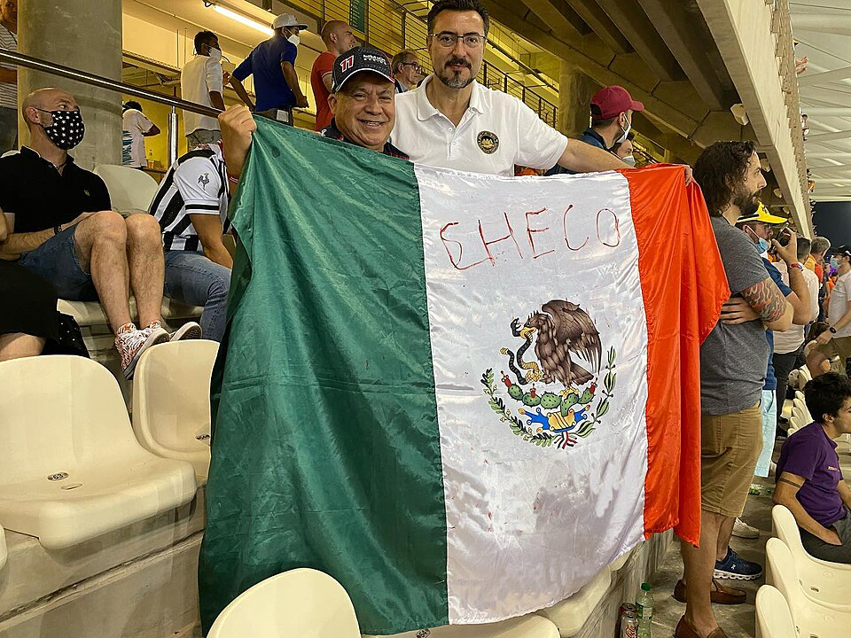
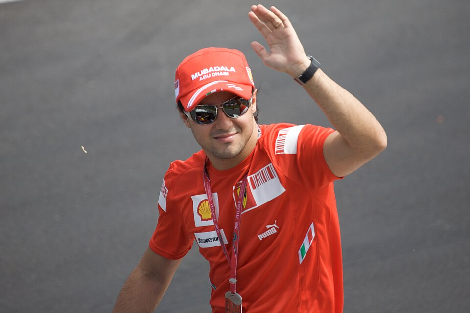
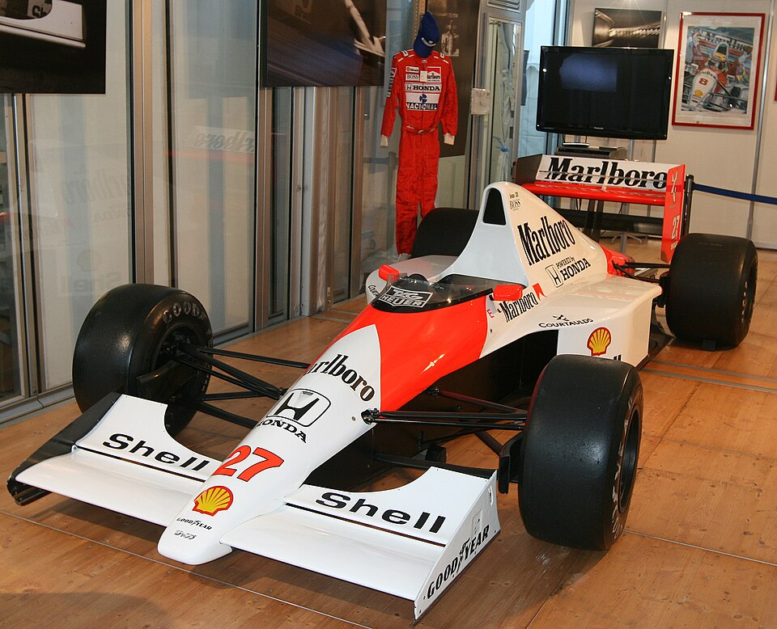
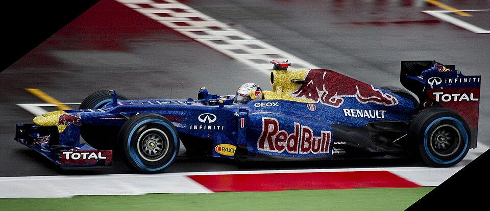
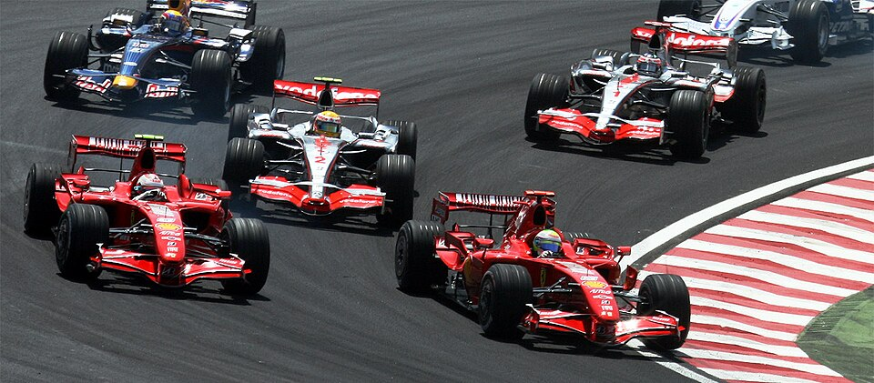
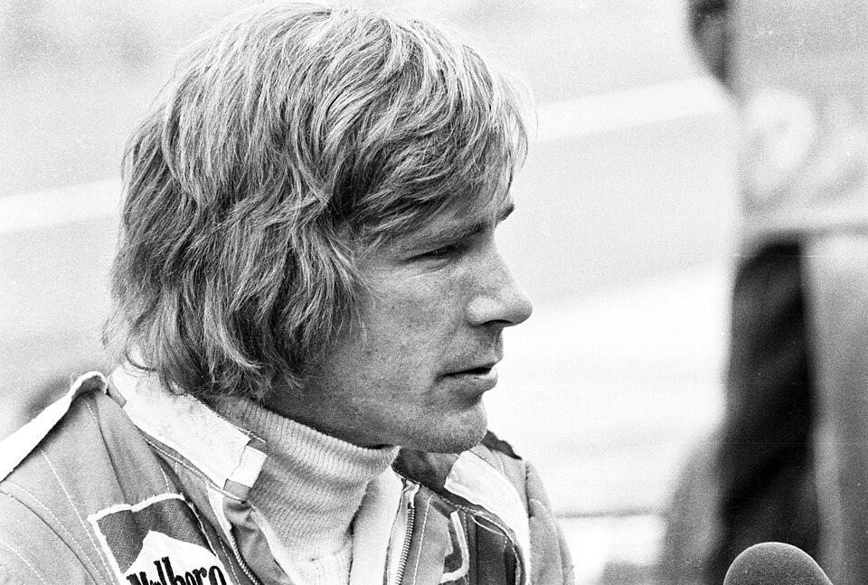
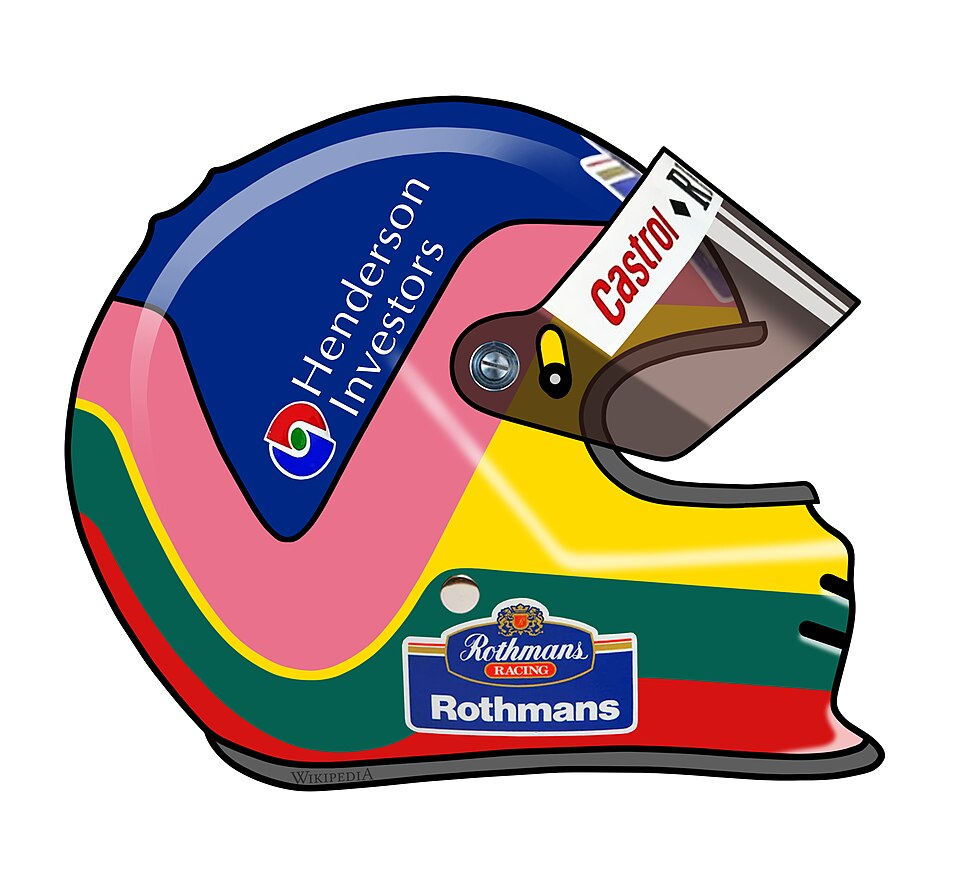
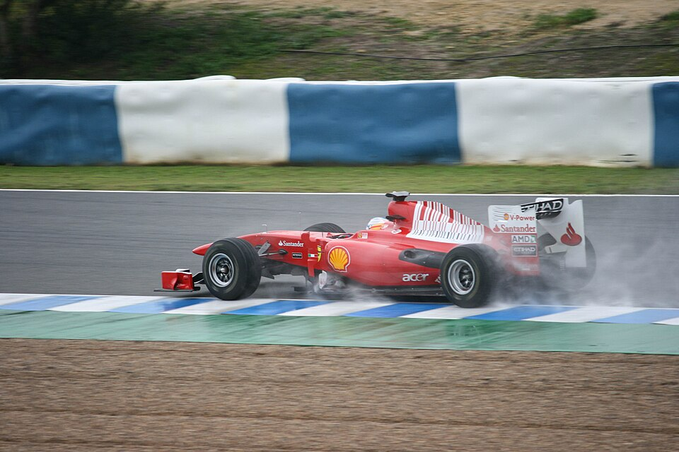
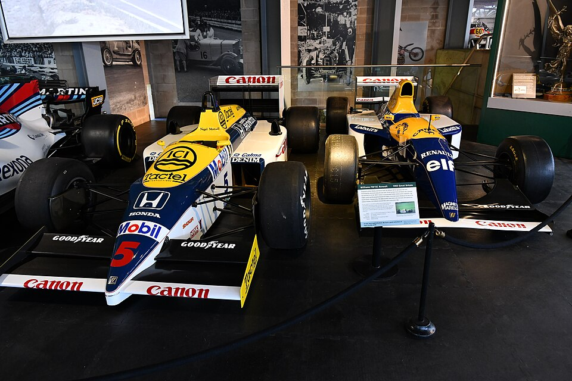
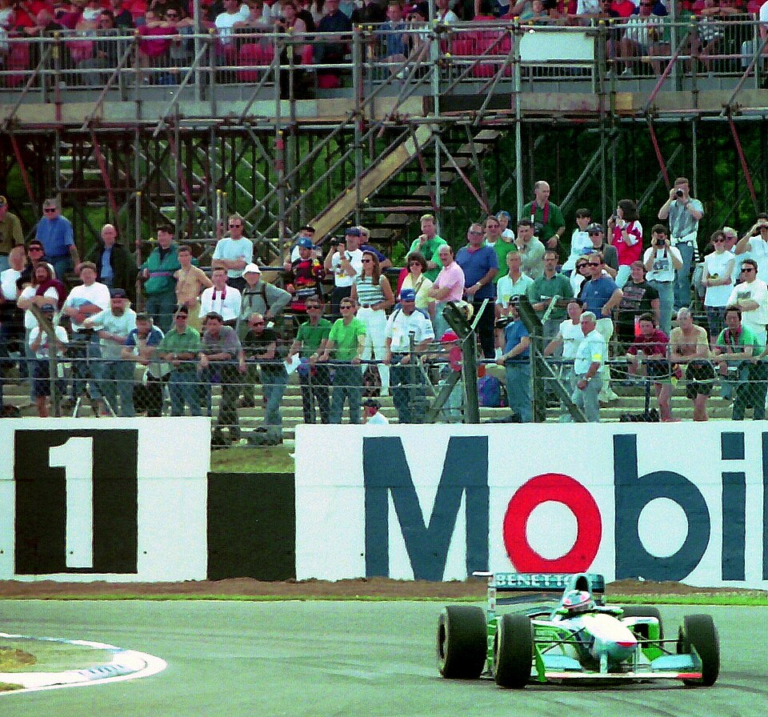

I 10 FINALI DI STAGIONE PIÙ EMOZIONANTI DELLA FORMULA 1
Una selezione editoriale dei campionati decisi da un sorpasso all’ultimo giro, una strategia, una rivalità o un episodio controverso. L’ordine segue la classifica del testo di riferimento e non pretende di essere una graduatoria ufficiale.
Vai alle ultime stagioni · Apri l’archivio completo dal 2006 al 2026
Le fotografie sono provenienti da Wikimedia Commons e pubblicate secondo le rispettive licenze Creative Commons. Crediti, licenze e link alle fonti sono riportati nelle didascalie e nelle note legali.

1. 2021 — Abu Dhabi: il mondiale deciso all’ultimo giro
Max Verstappen e Lewis Hamilton arrivarono all’ultima gara a pari punti, al termine di una stagione ricca di duelli e rivalità. La Safety Car dopo l’incidente di Nicholas Latifi cambiò il finale: all’ultimo giro Verstappen superò Hamilton e conquistò il suo primo titolo. Una conclusione spettacolare e molto discussa per le decisioni della direzione gara.
Reportage della stagione 2021
2. 2008 — Brasile: il mondiale all’ultima curva
La pioggia rese imprevedibile il finale di Interlagos. Felipe Massa vinse la gara e per alcuni secondi sembrò campione; all’ultima curva Lewis Hamilton superò Timo Glock, conquistò il quinto posto necessario e vinse il titolo con un solo punto di vantaggio. Uno dei cambi di classifica più drammatici della storia della Formula 1.
Reportage della stagione 2008
3. 1989 e 1990 — Suzuka: Senna contro Prost
La rivalità tra Ayrton Senna e Alain Prost produsse due finali controversi sul circuito giapponese. Nel 1989 i compagni McLaren si scontrarono: Senna ripartì e vinse in pista, ma fu poi squalificato, consegnando il titolo a Prost. Nel 1990, con Prost alla Ferrari, un nuovo contatto alla prima curva assegnò matematicamente il mondiale a Senna.

4. 2012 — Brasile: la rimonta di Vettel
Coinvolto in un contatto al primo giro e scivolato nelle retrovie con la vettura danneggiata, Sebastian Vettel rimontò fino al sesto posto a Interlagos, in condizioni variabili. Fernando Alonso concluse secondo, ma non recuperò i punti necessari: Vettel conquistò così il terzo titolo consecutivo.
Reportage della stagione 2012
5. 2007 — Brasile: il trionfo inatteso di Räikkönen
Lewis Hamilton, Fernando Alonso e Kimi Räikkönen arrivarono all’ultima gara ancora in lotta per il titolo. Dopo l’errore di Hamilton in Cina e le difficoltà in Brasile, Räikkönen vinse la gara e il mondiale con un solo punto di vantaggio su entrambi i rivali.
Reportage della stagione 2007
6. 1976 — Giappone: Hunt contro Lauda
Dopo il grave incidente al Nürburgring, Niki Lauda tornò a correre in poche settimane. Al Fuji, sotto una pioggia torrenziale, scelse di ritirarsi; James Hunt proseguì e recuperò le posizioni necessarie per vincere il titolo con un solo punto di vantaggio. Due approcci diversi al rischio in un campionato diventato leggendario.

7. 1997 — Jerez: Schumacher contro Villeneuve
Michael Schumacher arrivò a Jerez in vantaggio su Jacques Villeneuve. Nel loro duello le vetture entrarono in collisione: Schumacher si ritirò, mentre Villeneuve proseguì e conquistò il titolo. La FIA giudicò intenzionale la manovra di Schumacher ed escluse il tedesco dalla classifica del campionato piloti.

8. 2010 — Abu Dhabi: la strategia che costò il titolo
Fernando Alonso arrivò all’ultima gara in testa al mondiale. La Ferrari reagì alla sosta di Mark Webber e Alonso rientrò nel traffico, rimanendo bloccato dietro la Renault di Vitaly Petrov. Sebastian Vettel vinse la gara e il suo primo titolo mondiale; Alonso e la Ferrari persero l’occasione di conquistare il campionato.
Reportage della stagione 2010
9. 1986 — Adelaide: il mondiale sfumato per Mansell
Nigel Mansell, Nelson Piquet e Alain Prost si giocarono il titolo nell’ultima gara. Una foratura ad alta velocità costrinse Mansell al ritiro; per precauzione la Williams richiamò anche Piquet. Prost vinse il Gran Premio e conquistò il suo secondo titolo consecutivo.

10. 1994 — Adelaide: il primo titolo di Schumacher
Michael Schumacher arrivò al finale con un solo punto di vantaggio su Damon Hill. Dopo un’uscita di pista e il rientro di Schumacher, Hill tentò il sorpasso e le due vetture entrarono in collisione: entrambi si ritirarono e Schumacher conquistò il suo primo titolo. L’episodio rimane tra i più controversi della sua carriera.